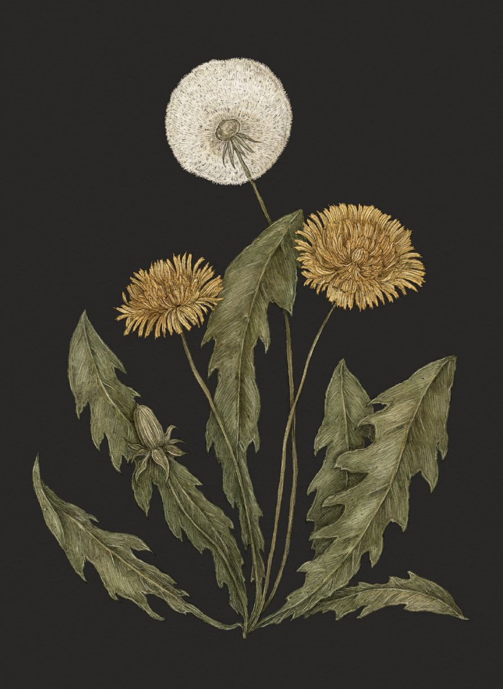

The Language of Flowers
Dandelion

Dandelion
Taraxacum
Meaning
- Divination
- Fortune-telling
Origin
Dandelions are associated with wishes and fortune-telling; it's customary in many Western cultures to
make a wish while blowing on the dandelion's "puff," dispersing its seeds. More practically,
dandelions have been used to predict the weather, as their puffs will stay closed in inclement weather
and open when sunny, clear skies are on the way.
Pair With
- Ferns for a magical solstice celebration
- Foxglove and Holly to indicate the ability to solve future problems